Visual understanding is inherently hierarchical, as high-level semantic concepts are composed of fine-grained, spatially localized components. Yet existing interpretability methods typically focus on a single feature scale, either local or global, leaving a critical gap in understanding the compositional structure between them. Recovering this structure without supervision is particularly challenging, as the correspondence between local and global concepts is latent, varies across samples, and may emerge only through inconsistent or partial patterns. To address this challenge, we introduce Local–Global Sparse Autoencoders (LG-SAE), a multiscale interpretability framework for vision models. The core innovation of LG-SAE is a learned bridge that explicitly captures the compositional relationships between local and global visual concepts. By jointly operating on patch-level and image-level embeddings, LG-SAE learns a sparse, interpretable graph that reveals how high-level semantic concepts are constructed from a small set of spatially grounded components. Building on this representation, we present a unified framework for discovering local-global concept relationships, explaining model predictions through multiscale Concept Bottleneck Models, and steering models via localized concept edits. Extensive evaluations show that our framework: (i) captures meaningful cross-scale concept relations; (ii) enables high-quality spatial grounding without compromising downstream accuracy; (iii) provides human-interpretable model explanations, as validated by a user study; and (iv) facilitates intuitive and effective model steering.
Given a pretrained vision model, LG-SAE decomposes its global (e.g., CLS token) and local (e.g., patch tokens) representations with separate global and local SAEs, producing global features \(z_G\) and local feature maps \(z_{L,p}\). A sparse, non-negative bridge matrix \(\mathcal{C}\) approximates the global activations from spatially pooled local activations \(\bar{z}_L\):
so that \(\mathcal{C}_{i,j}\) measures the contribution of local feature \(j\) to global feature \(i\). LG-SAE is trained in three stages:
The result is a sparse, interpretable graph linking each global concept to a small set of spatially grounded local components.
The learned bridge recovers known part–whole structure more faithfully than post-hoc statistical association methods. Compared with PPMI and co-occurrence baselines, LG-SAE captures cleaner compositional relations, and its local features align with semantic parts (e.g., of the "bird" super-category in Part-ImageNet).
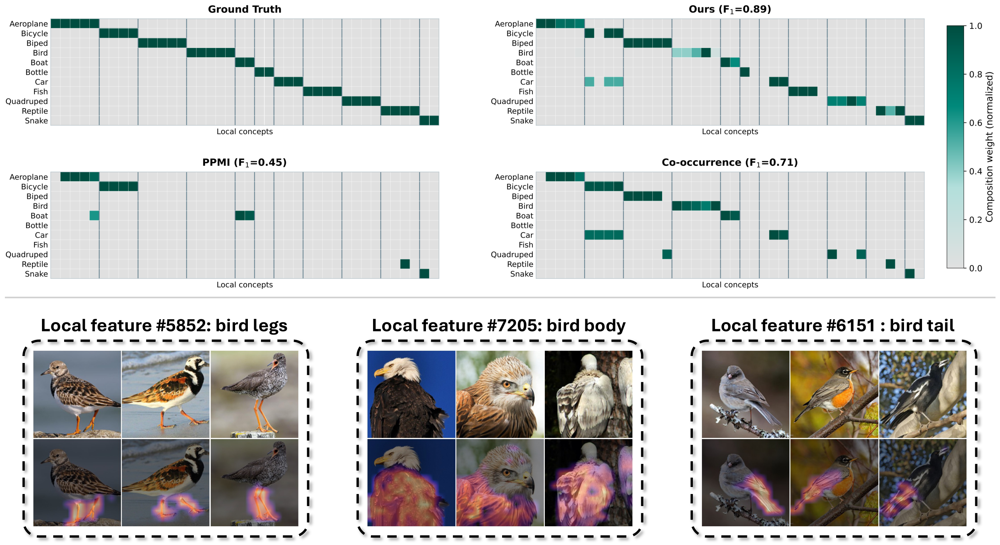
Compositional graphs of LG-SAE vs. statistical methods. Top: LG-SAE captures cleaner compositional relations. Bottom: LG-SAE local features aligned with semantic parts of the "bird" super-category.
Below, each example shows a global LG-SAE feature (top activating images) together with a connected local feature and its top activating regions.
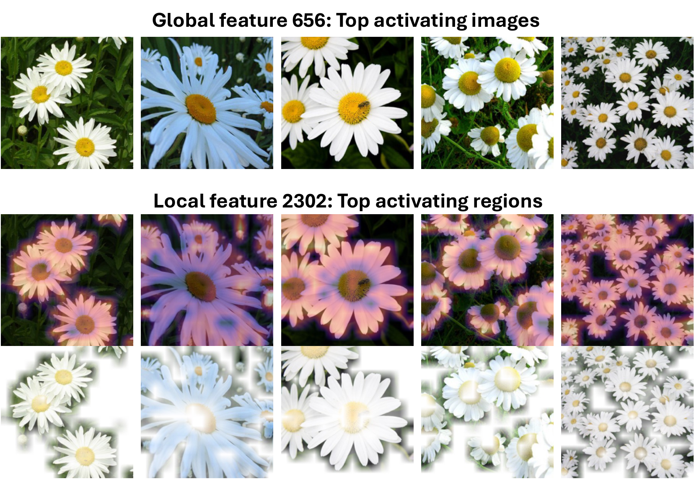
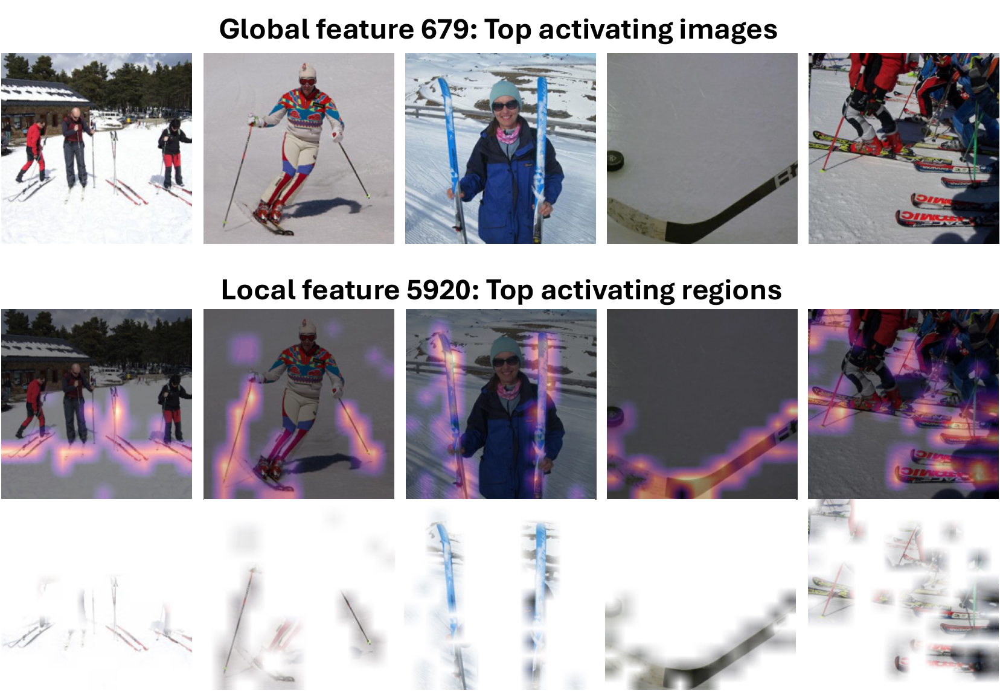
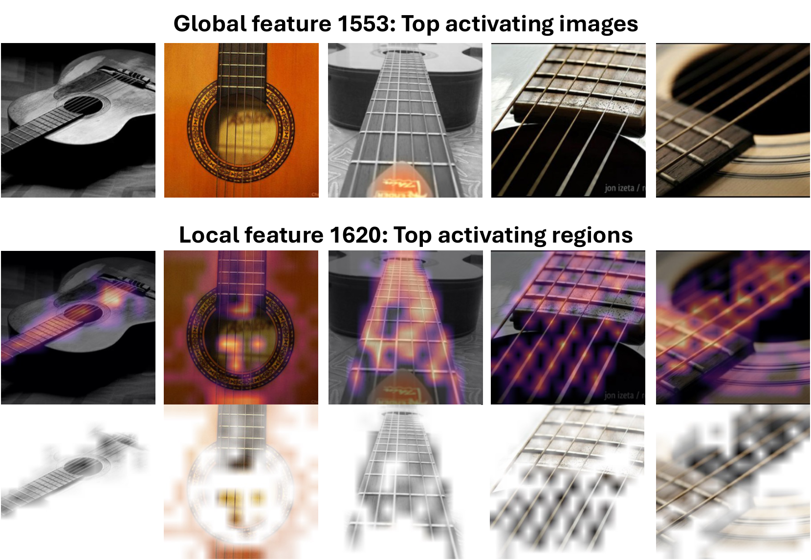
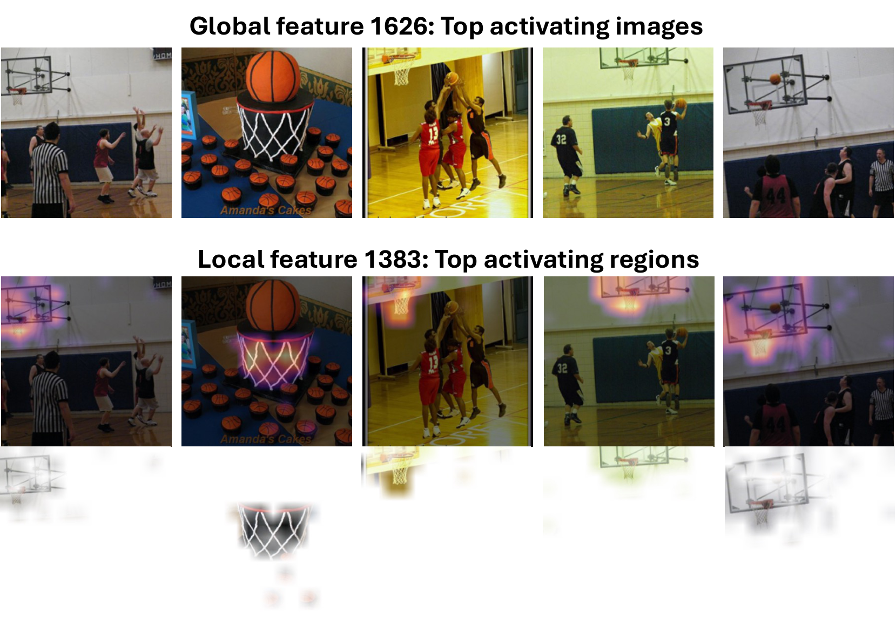
We use the global SAE features as a concept bottleneck and train a linear classifier on top of them, obtaining a Local–Global Concept Bottleneck Model (LG-CBM). Each prediction is explained by the global concepts that contributed most to the predicted class, and each global concept is grounded in the image by its most relevant local constituents, selected through the bridge \(\mathcal{C}\).
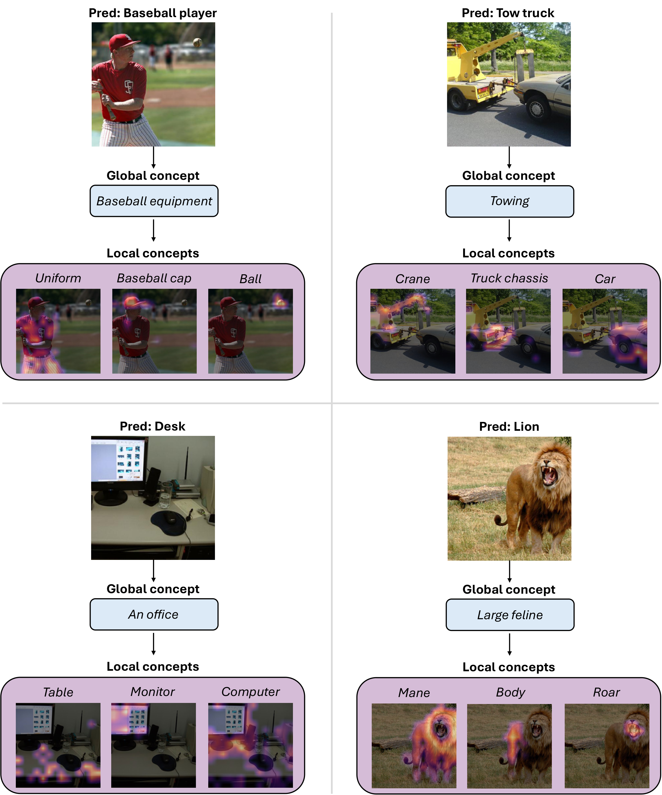
Multiscale explainability examples: for each image, the predicted class, the global concept contributing most strongly to the prediction, and the top-3 local concepts related to it.
On zero-shot concept grounding benchmarks (Part-ImageNet and COCO-Stuff), LG-CBM local concepts are substantially more spatially precise and consistent than recent concept localization methods.
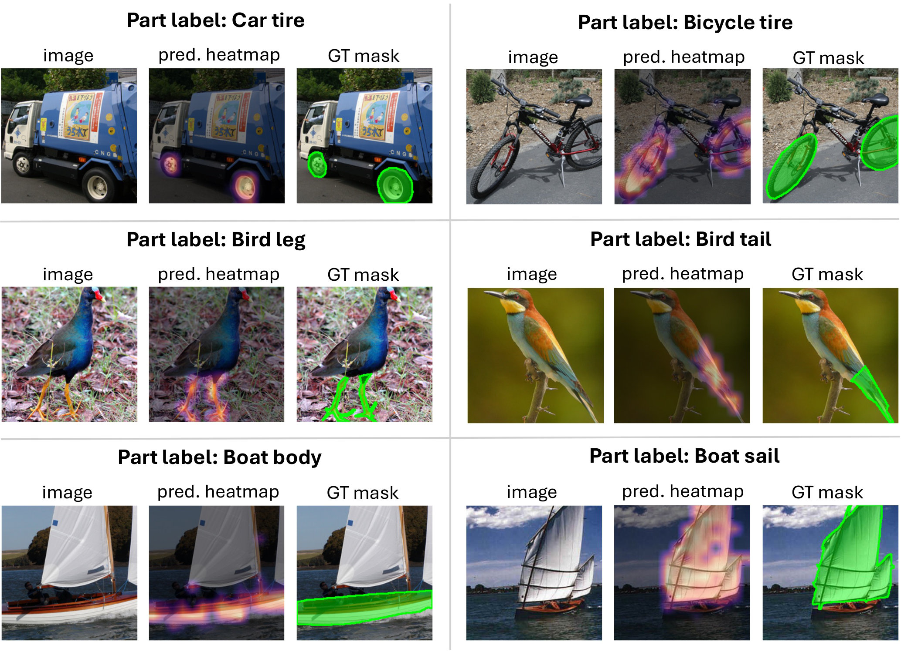
Qualitative concept grounding results.
| Method | Locality ↑ | Consistency ↑ | Impurity ↓ | |||
|---|---|---|---|---|---|---|
| IN-Part | COCO-Stuff | IN-Part | COCO-Stuff | IN-Part | COCO-Stuff | |
| SALF-CBM | 16.4 | 19.5 | 9.9 | 6.7 | 0.841 | 1.143 |
| DN-CBM | 18.7 | 17.9 | 9.3 | 5.7 | 0.761 | 1.235 |
| MSAE | 20.9 | 20.0 | 10.6 | 7.9 | 0.833 | 1.198 |
| PatchSAE | 32.2 | 34.6 | 13.1 | 12.7 | 0.353 | 0.663 |
| CFM | 44.3 | 44.5 | 15.3 | 13.1 | 0.333 | 0.539 |
| LG-CBM (ours) | 56.5 | 50.7 | 46.7 | 49.2 | 0.119 | 0.240 |
Classification accuracy. These spatially grounded explanations come without compromising performance: with a CLIP backbone, LG-CBM reaches 78.4% top-1 accuracy on ImageNet and 54.5% on Places365, competitive with the highest-performing CBMs.
LG-CBM enables localized interventions: a user can suppress or amplify a local concept within a selected image region, and the edit is propagated through the bridge to the global concepts and the final prediction. In the example below, the model misclassifies a bicycle water bottle as a disk brake; amplifying a single local concept, "Flask", within the bottle region shifts the prediction to the correct class.
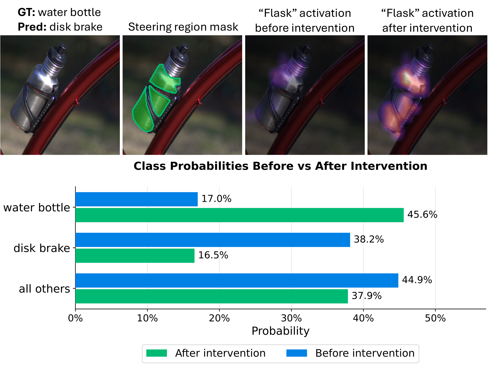
Misclassification correction via a local intervention.
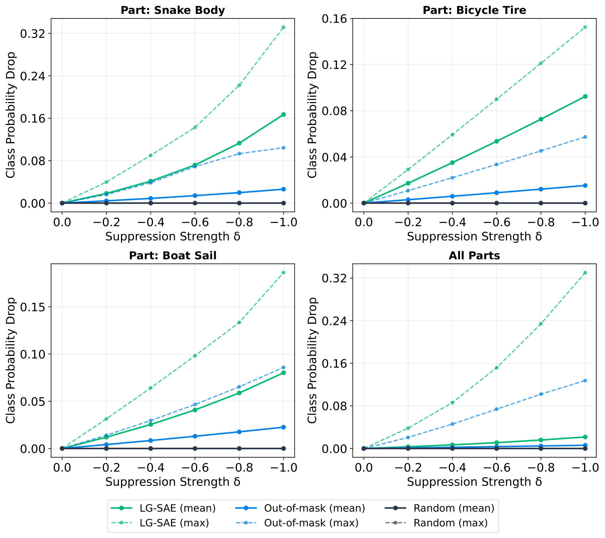
Local concept suppression on Part-ImageNet: suppressing a single anchored local concept within its part mask causes a monotonic drop in predicted-class probability, substantially larger than suppressing it outside the mask, while suppressing random concepts has virtually no effect.
In a user study with 32 participants, LG-SAE's compositional links were judged valid more often (and more consistently) than a statistical co-occurrence baseline, and our spatially aware concept names were preferred over CLIP-Dissect labels.
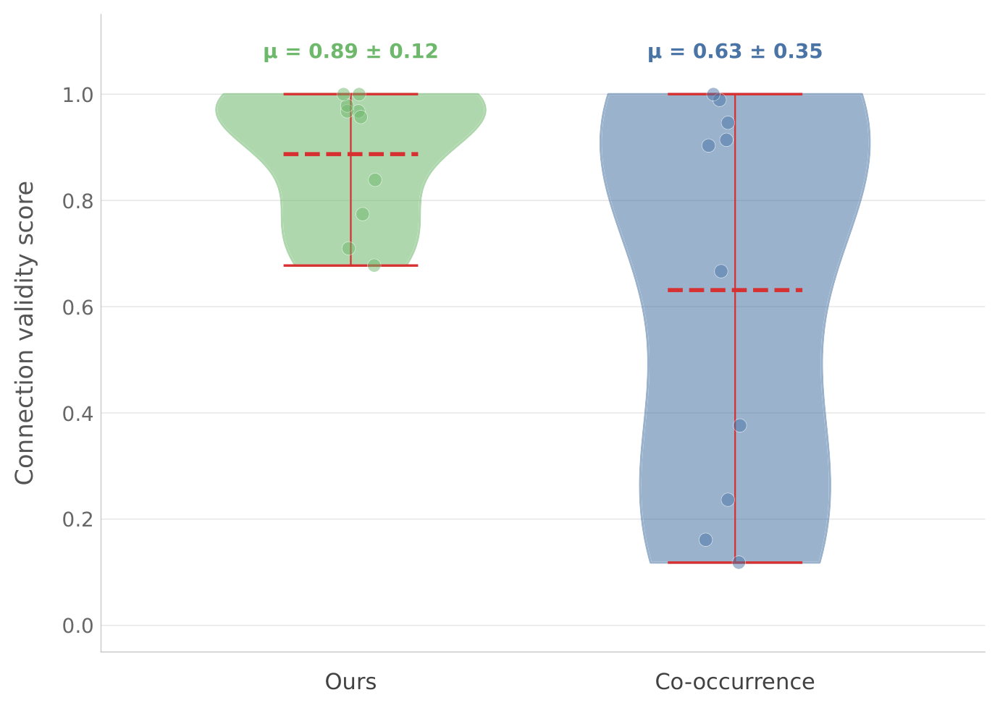
Concept composition survey.
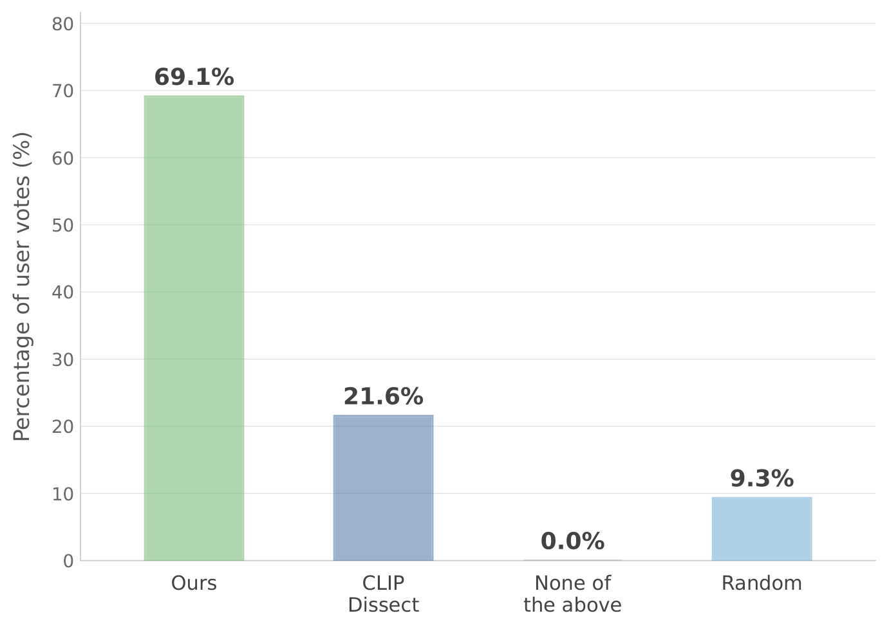
Concept naming survey.
If you find this project useful for your research, please cite the following:
@inproceedings{benou2026localglobal,
title={Local--Global Sparse Autoencoders for Multiscale Interpretability in Vision Models},
author={Benou, Itay and Riklin-Raviv, Tammy},
booktitle={Advances in Neural Information Processing Systems (NeurIPS)},
year={2026}
}